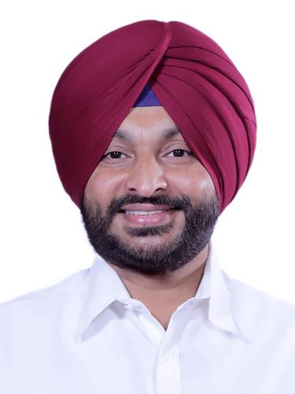
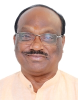

ਤੀਜਾ ਨਰਿੰਦਰ ਮੋਦੀ ਮੰਤਰਾਲਾ

ਮਿਆਦ:
੯ ਜੂਨ ੨੦੨੪ - ੧ ਜਨਵਰੀ ੨੦੨੫
ਉਪ ਪ੍ਰਧਾਨ ਮੰਤਰੀ:
ਰਚਨਾ:
ਕੈਬਨਿਟ ਮੰਤਰੀ ਸ: ੩੦
ਰਾਜ ਮੰਤਰੀ (ਸੁਤੰਤਰ ਚਾਰਜ): ੫
ਰਾਜ ਮੰਤਰੀ: ੩੬
ਮੁੱਖ ਕੈਬਨਿਟ ਮੰਤਰੀ
ਰਾਜਨਾਥ ਸਿੰਘ
ਰੱਖਿਆ ਮੰਤਰਾਲੇ
ਅਮਿਤ ਸ਼ਾਹ
ਗ੍ਰਹਿ ਮੰਤਰਾਲੇ
ਨਿਤਿਨ ਗਡਕਰੀ
ਸੜਕ ਆਵਾਜਾਈ ਅਤੇ ਰਾਜਮਾਰਗ ਮੰਤਰਾਲਾ
ਜਗਤ ਪ੍ਰਕਾਸ਼ ਨੱਡਾ
ਸਿਹਤ ਅਤੇ ਪਰਿਵਾਰ ਭਲਾਈ ਮੰਤਰਾਲਾ
ਸਾਰੇ ਮੰਤਰੀ
ਨਰਿੰਦਰ ਮੋਦੀ
ਪਰਮਾਣੂ ਊਰਜਾ ਵਿਭਾਗ[ਪ੍ਰਧਾਨ ਮੰਤਰੀ]ਸਪੇਸ ਵਿਭਾਗ[ਪ੍ਰਧਾਨ ਮੰਤਰੀ]
ਪਰਸੋਨਲ ਪਬਲਿਕ ਸ਼ਿਕਾਇਤਾਂ ਅਤੇ ਪੈਨਸ਼ਨਾਂ ਦਾ ਮੰਤਰਾਲਾ[ਪ੍ਰਧਾਨ ਮੰਤਰੀ]

ਰਾਜਨਾਥ ਸਿੰਘ
ਰੱਖਿਆ ਮੰਤਰਾਲੇ[ਕੈਬਨਿਟ ਮੰਤਰੀ ਸ]
ਅਮਿਤ ਸ਼ਾਹ
ਸਹਿਕਾਰਤਾ ਮੰਤਰਾਲਾ[ਕੈਬਨਿਟ ਮੰਤਰੀ ਸ]ਗ੍ਰਹਿ ਮੰਤਰਾਲੇ[ਕੈਬਨਿਟ ਮੰਤਰੀ ਸ]

ਨਿਤਿਨ ਗਡਕਰੀ
ਸੜਕ ਆਵਾਜਾਈ ਅਤੇ ਰਾਜਮਾਰਗ ਮੰਤਰਾਲਾ[ਕੈਬਨਿਟ ਮੰਤਰੀ ਸ].jpg)
ਜਗਤ ਪ੍ਰਕਾਸ਼ ਨੱਡਾ
ਰਸਾਇਣ ਅਤੇ ਖਾਦ ਮੰਤਰਾਲਾ[ਕੈਬਨਿਟ ਮੰਤਰੀ ਸ]ਸਿਹਤ ਅਤੇ ਪਰਿਵਾਰ ਭਲਾਈ ਮੰਤਰਾਲਾ[ਕੈਬਨਿਟ ਮੰਤਰੀ ਸ]

ਸ਼ਿਵਰਾਜ ਸਿੰਘ ਚੌਹਾਨ
ਖੇਤੀਬਾੜੀ ਮੰਤਰਾਲਾ[ਕੈਬਨਿਟ ਮੰਤਰੀ ਸ]ਪੇਂਡੂ ਵਿਕਾਸ ਮੰਤਰਾਲਾ[ਕੈਬਨਿਟ ਮੰਤਰੀ ਸ]
_(cropped).jpg)
ਨਿਰਮਲਾ ਸੀਤਾਰਮਨ
ਕਾਰਪੋਰੇਟ ਮਾਮਲਿਆਂ ਦਾ ਮੰਤਰਾਲਾ[ਕੈਬਨਿਟ ਮੰਤਰੀ ਸ]ਵਿੱਤ ਮੰਤਰਾਲਾ[ਕੈਬਨਿਟ ਮੰਤਰੀ ਸ]

ਸੁਬਰਾਮਣੀਅਮ ਜੈਸ਼ੰਕਰ
ਵਿਦੇਸ਼ ਮੰਤਰਾਲਾ[ਕੈਬਨਿਟ ਮੰਤਰੀ ਸ]
ਮਨੋਹਰ ਲਾਲ ਖੱਟਰ
ਆਵਾਸ ਅਤੇ ਸ਼ਹਿਰੀ ਗਰੀਬੀ ਦੂਰ ਕਰਨ ਦਾ ਮੰਤਰਾਲਾ[ਕੈਬਨਿਟ ਮੰਤਰੀ ਸ]ਬਿਜਲੀ ਮੰਤਰਾਲਾ[ਕੈਬਨਿਟ ਮੰਤਰੀ ਸ]

ਐੱਚ. ਡੀ.
ਭਾਰੀ ਉਦਯੋਗ ਮੰਤਰਾਲਾ[ਕੈਬਨਿਟ ਮੰਤਰੀ ਸ]ਸਟੀਲ ਮੰਤਰਾਲੇ[ਕੈਬਨਿਟ ਮੰਤਰੀ ਸ]
.jpg)
ਪੀਯੂਸ਼ ਗੋਇਲ
ਵਣਜ ਅਤੇ ਉਦਯੋਗ ਮੰਤਰਾਲਾ[ਕੈਬਨਿਟ ਮੰਤਰੀ ਸ]
ਧਰਮਿੰਦਰ ਪ੍ਰਧਾਨ
ਸਿੱਖਿਆ ਮੰਤਰਾਲੇ[ਕੈਬਨਿਟ ਮੰਤਰੀ ਸ]
ਜੀਤਨ ਰਾਮ ਮਾਂਝੀ
ਸੂਖਮ ਛੋਟੇ ਅਤੇ ਮੱਧਮ ਉਦਯੋਗ ਮੰਤਰਾਲਾ[ਕੈਬਨਿਟ ਮੰਤਰੀ ਸ]
ਰਾਜੀਵ ਰੰਜਨ ਸਿੰਘ
ਮੱਛੀ ਪਾਲਣ, ਪਸ਼ੂ ਪਾਲਣ ਅਤੇ ਡੇਅਰੀ ਮੰਤਰਾਲਾ[ਕੈਬਨਿਟ ਮੰਤਰੀ ਸ]ਪੰਚਾਇਤੀ ਰਾਜ ਮੰਤਰਾਲਾ[ਕੈਬਨਿਟ ਮੰਤਰੀ ਸ]

ਸਰਬਾਨੰਦ ਸੋਨੋਵਾਲ
ਸ਼ਿਪਿੰਗ ਮੰਤਰਾਲੇ[ਕੈਬਨਿਟ ਮੰਤਰੀ ਸ]
ਵਰਿੰਦਰ ਕੁਮਾਰ ਖਟੀਕ
ਸਮਾਜਿਕ ਨਿਆਂ ਅਤੇ ਸ਼ਕਤੀਕਰਨ ਮੰਤਰਾਲਾ[ਕੈਬਨਿਟ ਮੰਤਰੀ ਸ]
ਰਾਮਮੋਹਨ ਨਾਇਡੂ ਕਿੰਜਰਾਪੂ
ਸ਼ਹਿਰੀ ਹਵਾਬਾਜ਼ੀ ਮੰਤਰਾਲਾ[ਕੈਬਨਿਟ ਮੰਤਰੀ ਸ]
ਪ੍ਰਹਿਲਾਦ ਜੋਸ਼ੀ
ਖਪਤਕਾਰ ਮਾਮਲੇ, ਖੁਰਾਕ ਅਤੇ ਜਨਤਕ ਵੰਡ ਮੰਤਰਾਲਾ[ਕੈਬਨਿਟ ਮੰਤਰੀ ਸ]ਨਵੀਂ ਅਤੇ ਨਵਿਆਉਣਯੋਗ ਊਰਜਾ ਮੰਤਰਾਲਾ[ਕੈਬਨਿਟ ਮੰਤਰੀ ਸ]

ਜੁਆਲ ਓਰਾਮ
ਕਬਾਇਲੀ ਮਾਮਲਿਆਂ ਦਾ ਮੰਤਰਾਲਾ[ਕੈਬਨਿਟ ਮੰਤਰੀ ਸ]
ਗਿਰੀਰਾਜ ਸਿੰਘ
ਕੱਪੜਾ ਮੰਤਰਾਲਾ[ਕੈਬਨਿਟ ਮੰਤਰੀ ਸ]
ਅਸ਼ਵਿਨੀ ਵੈਸ਼ਨਵ
ਸੂਚਨਾ ਤਕਨਾਲੋਜੀ ਮੰਤਰਾਲਾ[ਕੈਬਨਿਟ ਮੰਤਰੀ ਸ]ਰੇਲ ਮੰਤਰਾਲਾ[ਕੈਬਨਿਟ ਮੰਤਰੀ ਸ]

ਜੋਤੀਰਾਦਿਤਿਆ ਸਿੰਧੀਆ
ਸੰਚਾਰ ਮੰਤਰਾਲਾ[ਕੈਬਨਿਟ ਮੰਤਰੀ ਸ]ਉੱਤਰ ਪੂਰਬੀ ਖੇਤਰ ਦੇ ਵਿਕਾਸ ਮੰਤਰਾਲਾ[ਕੈਬਨਿਟ ਮੰਤਰੀ ਸ]

ਭੂਪੇਂਦਰ ਯਾਦਵ
ਵਾਤਾਵਰਣ ਅਤੇ ਜੰਗਲਾਤ ਮੰਤਰਾਲਾ[ਕੈਬਨਿਟ ਮੰਤਰੀ ਸ]
ਗਜੇਂਦਰ ਸਿੰਘ ਸ਼ੇਖਾਵਤ
ਸੱਭਿਆਚਾਰ ਮੰਤਰਾਲਾ[ਕੈਬਨਿਟ ਮੰਤਰੀ ਸ]ਸੈਰ ਸਪਾਟਾ ਮੰਤਰਾਲੇ[ਕੈਬਨਿਟ ਮੰਤਰੀ ਸ]

ਅੰਨਪੂਰਨਾ ਦੇਵੀ ਯਾਦਵ
ਮਹਿਲਾ ਅਤੇ ਬਾਲ ਵਿਕਾਸ ਮੰਤਰਾਲਾ[ਕੈਬਨਿਟ ਮੰਤਰੀ ਸ]
ਕਿਰਨ ਰਿਜਿਜੂ
ਘੱਟ ਗਿਣਤੀ ਮਾਮਲਿਆਂ ਦਾ ਮੰਤਰਾਲਾ[ਕੈਬਨਿਟ ਮੰਤਰੀ ਸ]ਸੰਸਦੀ ਮਾਮਲਿਆਂ ਦਾ ਮੰਤਰਾਲਾ[ਕੈਬਨਿਟ ਮੰਤਰੀ ਸ]
_(cropped).jpg)
ਹਰਦੀਪ ਸਿੰਘ ਪੁਰੀ
ਪੈਟਰੋਲੀਅਮ ਅਤੇ ਕੁਦਰਤੀ ਗੈਸ ਮੰਤਰਾਲਾ[ਕੈਬਨਿਟ ਮੰਤਰੀ ਸ]’,_in_New_Delhi.JPG)
ਐੱਲ. ਮਨਸੁਖ ਮਾਂਡਵੀਆ
ਕਿਰਤ ਮੰਤਰਾਲਾ[ਕੈਬਨਿਟ ਮੰਤਰੀ ਸ]ਯੁਵਾ ਮਾਮਲੇ ਅਤੇ ਖੇਡ ਮੰਤਰਾਲਾ[ਕੈਬਨਿਟ ਮੰਤਰੀ ਸ]

ਜੀ. ਕਿਸ਼ਨ ਰੈਡੀ
ਕੋਲਾ ਮੰਤਰਾਲਾ[ਕੈਬਨਿਟ ਮੰਤਰੀ ਸ]ਖਾਣਾਂ ਦਾ ਮੰਤਰਾਲਾ[ਕੈਬਨਿਟ ਮੰਤਰੀ ਸ]

ਚਿਰਾਗ ਪਾਸਵਾਨ
ਫੂਡ ਪ੍ਰੋਸੈਸਿੰਗ ਉਦਯੋਗ ਮੰਤਰਾਲਾ[ਕੈਬਨਿਟ ਮੰਤਰੀ ਸ]
ਚੰਦਰਕਾਂਤ ਰਘੂਨਾਥ ਪਾਟਿਲ
ਜਲ ਸ਼ਕਤੀ ਮੰਤਰਾਲਾ[ਕੈਬਨਿਟ ਮੰਤਰੀ ਸ]
ਰਾਓ ਇੰਦਰਜੀਤ ਸਿੰਘ
ਸੱਭਿਆਚਾਰ ਮੰਤਰਾਲਾ[ਰਾਜ ਮੰਤਰੀ]ਯੋਜਨਾ ਮੰਤਰਾਲਾ[ਰਾਜ ਮੰਤਰੀ (ਸੁਤੰਤਰ ਚਾਰਜ)]
ਅੰਕੜਾ ਅਤੇ ਪ੍ਰੋਗਰਾਮ ਲਾਗੂ ਕਰਨ ਦਾ ਮੰਤਰਾਲਾ[ਰਾਜ ਮੰਤਰੀ (ਸੁਤੰਤਰ ਚਾਰਜ)]

ਜਤਿੰਦਰ ਸਿੰਘ
ਪਰਮਾਣੂ ਊਰਜਾ ਵਿਭਾਗ[ਰਾਜ ਮੰਤਰੀ]ਸਪੇਸ ਵਿਭਾਗ[ਰਾਜ ਮੰਤਰੀ]
ਧਰਤੀ ਵਿਗਿਆਨ ਮੰਤਰਾਲਾ[ਰਾਜ ਮੰਤਰੀ (ਸੁਤੰਤਰ ਚਾਰਜ)]

ਅਰਜੁਨ ਰਾਮ ਮੇਘਵਾਲ
ਕਾਨੂੰਨ ਅਤੇ ਨਿਆਂ ਮੰਤਰਾਲਾ[ਰਾਜ ਮੰਤਰੀ (ਸੁਤੰਤਰ ਚਾਰਜ)]ਸੰਸਦੀ ਮਾਮਲਿਆਂ ਦਾ ਮੰਤਰਾਲਾ[ਰਾਜ ਮੰਤਰੀ]

ਪ੍ਰਤਾਪਰਾਓ ਗਣਪਤਰਾਓ ਜਾਧਵ
ਆਯੁਰਵੇਦ ਯੋਗ ਅਤੇ ਨੈਚਰੋਪੈਥੀ ਯੂਨਾਨੀ ਸਿੱਧ ਅਤੇ ਹੋਮਿਓਪੈਥੀ ਮੰਤਰਾਲਾ[ਰਾਜ ਮੰਤਰੀ (ਸੁਤੰਤਰ ਚਾਰਜ)]
ਜਯੰਤ ਚੌਧਰੀ
ਸਿੱਖਿਆ ਮੰਤਰਾਲੇ[ਰਾਜ ਮੰਤਰੀ]ਹੁਨਰ ਵਿਕਾਸ ਅਤੇ ਉੱਦਮਤਾ ਮੰਤਰਾਲਾ[ਰਾਜ ਮੰਤਰੀ (ਸੁਤੰਤਰ ਚਾਰਜ)]

ਜਿਤਿਨ ਪ੍ਰਸਾਦ
ਵਣਜ ਅਤੇ ਉਦਯੋਗ ਮੰਤਰਾਲਾ[ਰਾਜ ਮੰਤਰੀ]ਸੂਚਨਾ ਤਕਨਾਲੋਜੀ ਮੰਤਰਾਲਾ[ਰਾਜ ਮੰਤਰੀ]

ਸ਼੍ਰੀਪਦ ਯਾਸੋ ਨਾਇਕ
ਨਵੀਂ ਅਤੇ ਨਵਿਆਉਣਯੋਗ ਊਰਜਾ ਮੰਤਰਾਲਾ[ਰਾਜ ਮੰਤਰੀ]ਬਿਜਲੀ ਮੰਤਰਾਲਾ[ਰਾਜ ਮੰਤਰੀ]

ਪੰਕਜ ਚੌਧਰੀ
ਵਿੱਤ ਮੰਤਰਾਲਾ[ਰਾਜ ਮੰਤਰੀ]
ਕ੍ਰਿਸ਼ਨ ਪਾਲ
ਸਹਿਕਾਰਤਾ ਮੰਤਰਾਲਾ[ਰਾਜ ਮੰਤਰੀ]
ਅਠਾਵਲੇ ਰਾਮਦਾਸ ਬੰਦੂ
ਸਮਾਜਿਕ ਨਿਆਂ ਅਤੇ ਸ਼ਕਤੀਕਰਨ ਮੰਤਰਾਲਾ[ਰਾਜ ਮੰਤਰੀ]
ਰਾਮ ਨਾਥ ਠਾਕੁਰ
ਖੇਤੀਬਾੜੀ ਮੰਤਰਾਲਾ[ਰਾਜ ਮੰਤਰੀ]
ਨਿਤਿਆਨੰਦ ਰਾਏ
ਗ੍ਰਹਿ ਮੰਤਰਾਲੇ[ਰਾਜ ਮੰਤਰੀ]
ਅਨੁਪ੍ਰਿਆ ਪਟੇਲ
ਰਸਾਇਣ ਅਤੇ ਖਾਦ ਮੰਤਰਾਲਾ[ਰਾਜ ਮੰਤਰੀ]ਸਿਹਤ ਅਤੇ ਪਰਿਵਾਰ ਭਲਾਈ ਮੰਤਰਾਲਾ[ਰਾਜ ਮੰਤਰੀ]

ਵੀ.
ਜਲ ਸ਼ਕਤੀ ਮੰਤਰਾਲਾ[ਰਾਜ ਮੰਤਰੀ]ਰੇਲ ਮੰਤਰਾਲਾ[ਰਾਜ ਮੰਤਰੀ]

ਪੇਮਾਸਾਨੀ ਚੰਦਰ ਸੇਖਰ
ਸੰਚਾਰ ਮੰਤਰਾਲਾ[ਰਾਜ ਮੰਤਰੀ]ਪੇਂਡੂ ਵਿਕਾਸ ਮੰਤਰਾਲਾ[ਰਾਜ ਮੰਤਰੀ]

ਐੱਸ. ਪੀ. ਸਿੰਘ ਬਘੇਲ
ਮੱਛੀ ਪਾਲਣ, ਪਸ਼ੂ ਪਾਲਣ ਅਤੇ ਡੇਅਰੀ ਮੰਤਰਾਲਾ[ਰਾਜ ਮੰਤਰੀ]ਪੰਚਾਇਤੀ ਰਾਜ ਮੰਤਰਾਲਾ[ਰਾਜ ਮੰਤਰੀ]

ਸ਼ੋਭਾ ਕਰੰਦਲਾਜੇ
ਕਿਰਤ ਮੰਤਰਾਲਾ[ਰਾਜ ਮੰਤਰੀ]ਸੂਖਮ ਛੋਟੇ ਅਤੇ ਮੱਧਮ ਉਦਯੋਗ ਮੰਤਰਾਲਾ[ਰਾਜ ਮੰਤਰੀ]

ਕੀਰਤੀ ਵਰਧਨ ਸਿੰਘ
ਵਾਤਾਵਰਣ ਅਤੇ ਜੰਗਲਾਤ ਮੰਤਰਾਲਾ[ਰਾਜ ਮੰਤਰੀ]ਵਿਦੇਸ਼ ਮੰਤਰਾਲਾ[ਰਾਜ ਮੰਤਰੀ]

ਬੀ. ਐੱਲ. ਵਰਮਾ (ਉੱਤਰ ਪ੍ਰਦੇਸ਼ ਸਿਆਸਤਦਾਨ)
ਖਪਤਕਾਰ ਮਾਮਲੇ, ਖੁਰਾਕ ਅਤੇ ਜਨਤਕ ਵੰਡ ਮੰਤਰਾਲਾ[ਰਾਜ ਮੰਤਰੀ]
ਸ਼ਾਂਤਨੂ ਠਾਕੁਰ
ਸ਼ਿਪਿੰਗ ਮੰਤਰਾਲੇ[ਰਾਜ ਮੰਤਰੀ]
ਸੁਰੇਸ਼ ਗੋਪੀ
ਪੈਟਰੋਲੀਅਮ ਅਤੇ ਕੁਦਰਤੀ ਗੈਸ ਮੰਤਰਾਲਾ[ਰਾਜ ਮੰਤਰੀ]ਸੈਰ ਸਪਾਟਾ ਮੰਤਰਾਲੇ[ਰਾਜ ਮੰਤਰੀ]

ਐੱਲ. ਮੁਰੁਗਨ
ਸੂਚਨਾ ਅਤੇ ਪ੍ਰਸਾਰਣ ਮੰਤਰਾਲਾ[ਰਾਜ ਮੰਤਰੀ]ਸੰਸਦੀ ਮਾਮਲਿਆਂ ਦਾ ਮੰਤਰਾਲਾ[ਰਾਜ ਮੰਤਰੀ]

ਅਜੈ ਤਮਟਾ
ਸੜਕ ਆਵਾਜਾਈ ਅਤੇ ਰਾਜਮਾਰਗ ਮੰਤਰਾਲਾ[ਰਾਜ ਮੰਤਰੀ]
ਬੰਦੀ ਸੰਜੇ ਕੁਮਾਰ
ਗ੍ਰਹਿ ਮੰਤਰਾਲੇ[ਰਾਜ ਮੰਤਰੀ]
ਕਮਲੇਸ਼ ਪਾਸਵਾਨ
ਪੇਂਡੂ ਵਿਕਾਸ ਮੰਤਰਾਲਾ[ਰਾਜ ਮੰਤਰੀ]
ਭਾਗੀਰਥ ਚੌਧਰੀ
ਖੇਤੀਬਾੜੀ ਮੰਤਰਾਲਾ[ਰਾਜ ਮੰਤਰੀ]
ਸਤੀਸ਼ ਚੰਦਰ ਦੂਬੇ
ਕੋਲਾ ਮੰਤਰਾਲਾ[ਰਾਜ ਮੰਤਰੀ]ਖਾਣਾਂ ਦਾ ਮੰਤਰਾਲਾ[ਰਾਜ ਮੰਤਰੀ]

ਸੰਜੇ ਸਿੰਘ
ਰੱਖਿਆ ਮੰਤਰਾਲੇ[ਰਾਜ ਮੰਤਰੀ]
ਰੇਲ ਮੰਤਰਾਲਾ[ਰਾਜ ਮੰਤਰੀ]
ਰਵਨੀਤ ਸਿੰਘ
ਫੂਡ ਪ੍ਰੋਸੈਸਿੰਗ ਉਦਯੋਗ ਮੰਤਰਾਲਾ[ਰਾਜ ਮੰਤਰੀ]ਰੇਲ ਮੰਤਰਾਲਾ[ਰਾਜ ਮੰਤਰੀ]

ਦੁਰਗਾ ਦਾਸ ਉਕੀ
ਕਬਾਇਲੀ ਮਾਮਲਿਆਂ ਦਾ ਮੰਤਰਾਲਾ[ਰਾਜ ਮੰਤਰੀ]
ਰਕਸ਼ਾ ਖਡਸੇ
ਯੁਵਾ ਮਾਮਲੇ ਅਤੇ ਖੇਡ ਮੰਤਰਾਲਾ[ਰਾਜ ਮੰਤਰੀ]
ਸੁਕਾਂਤਾ ਮਜੂਮਦਾਰ
ਉੱਤਰ ਪੂਰਬੀ ਖੇਤਰ ਦੇ ਵਿਕਾਸ ਮੰਤਰਾਲਾ[ਰਾਜ ਮੰਤਰੀ]ਸਿੱਖਿਆ ਮੰਤਰਾਲੇ[ਰਾਜ ਮੰਤਰੀ]

ਸਾਵਿਤਰੀ ਠਾਕੁਰ
ਮਹਿਲਾ ਅਤੇ ਬਾਲ ਵਿਕਾਸ ਮੰਤਰਾਲਾ[ਰਾਜ ਮੰਤਰੀ]
ਤੋਖਨ ਸਾਹੁ ॥
ਆਵਾਸ ਅਤੇ ਸ਼ਹਿਰੀ ਗਰੀਬੀ ਦੂਰ ਕਰਨ ਦਾ ਮੰਤਰਾਲਾ[ਰਾਜ ਮੰਤਰੀ]
ਰਾਜ ਭੂਸ਼ਣ ਚੌਧਰੀ
ਜਲ ਸ਼ਕਤੀ ਮੰਤਰਾਲਾ[ਰਾਜ ਮੰਤਰੀ]
ਭੂਪਤੀ ਰਾਜੂ ਸ਼੍ਰੀਨਿਵਾਸ ਵਰਮਾ
ਭਾਰੀ ਉਦਯੋਗ ਮੰਤਰਾਲਾ[ਰਾਜ ਮੰਤਰੀ]ਸਟੀਲ ਮੰਤਰਾਲੇ[ਰਾਜ ਮੰਤਰੀ]

ਹਰਸ਼ ਮਲਹੋਤਰਾ
ਕਾਰਪੋਰੇਟ ਮਾਮਲਿਆਂ ਦਾ ਮੰਤਰਾਲਾ[ਰਾਜ ਮੰਤਰੀ]
ਨਿੰਬੂਏਨ ਜਯੰਤੀਭਾਈ ਬੰਭਾਨੀਆ
ਖਪਤਕਾਰ ਮਾਮਲੇ, ਖੁਰਾਕ ਅਤੇ ਜਨਤਕ ਵੰਡ ਮੰਤਰਾਲਾ[ਰਾਜ ਮੰਤਰੀ]
ਮੁਰਲੀਧਰ ਮੋਹੋਲ
ਸ਼ਹਿਰੀ ਹਵਾਬਾਜ਼ੀ ਮੰਤਰਾਲਾ[ਰਾਜ ਮੰਤਰੀ]ਸਹਿਕਾਰਤਾ ਮੰਤਰਾਲਾ[ਰਾਜ ਮੰਤਰੀ]

ਜਾਰਜ ਕੁਰੀਅਨ
ਮੱਛੀ ਪਾਲਣ, ਪਸ਼ੂ ਪਾਲਣ ਅਤੇ ਡੇਅਰੀ ਮੰਤਰਾਲਾ[ਰਾਜ ਮੰਤਰੀ]ਘੱਟ ਗਿਣਤੀ ਮਾਮਲਿਆਂ ਦਾ ਮੰਤਰਾਲਾ[ਰਾਜ ਮੰਤਰੀ]

ਪਬਿਤ੍ਰਾ ਮਾਰਗਰਿਤਾ
ਵਿਦੇਸ਼ ਮੰਤਰਾਲਾ[ਰਾਜ ਮੰਤਰੀ]ਕੱਪੜਾ ਮੰਤਰਾਲਾ[ਰਾਜ ਮੰਤਰੀ]